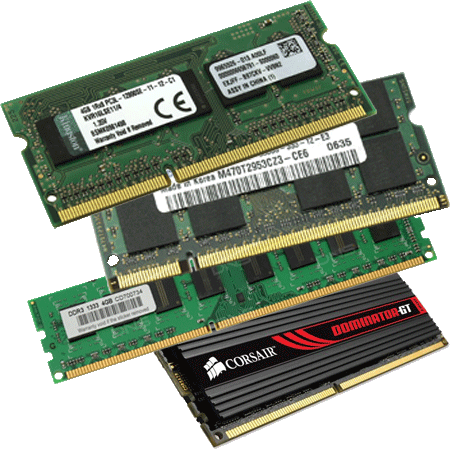

Операти́вная па́мять — энергозависимая часть системы компьютерной памяти, в которой во время работы компьютера хранится выполняемый машинный код (программы), а также входные, выходные и промежуточные данные, обрабатываемые процессором.
В 1834 году Чарльз Бэббидж начал разработку аналитической машины. Одну из важных частей этой машины он называл «складом» (store), эта часть предназначалась для хранения промежуточных результатов вычислений. Информация в «складе» запоминалась в чисто механическом устройстве в виде поворотов валов и шестерней. В ЭВМ первого поколения использовалось множество разновидностей и конструкций запоминающих устройств, основанных на различных физических принципах:
В качестве ОЗУ использовались также магнитные барабаны, обеспечивавшие достаточно малое для ранних компьютеров время доступа; также они использовались в качестве основной памяти для хранения программ и данных. Второе поколение требовало более технологичных, дешёвых и быстродействующих ОЗУ. Наиболее распространённым видом ОЗУ в то время стала память на магнитных сердечниках. Начиная с третьего поколения большинство электронных узлов компьютеров стали выполнять на микросхемах, в том числе и ОЗУ. Наибольшее распространение получили два вида ОЗУ:
SRAM хранит бит данных в виде состояния триггера. Этот вид памяти является более дорогим в расчёте на хранение 1 бита, но, как правило, имеет наименьшее время доступа и меньшее энергопотребление, чем DRAM. В современных компьютерах часто используется в качестве кэш-памяти процессора. DRAM хранит бит данных в виде заряда конденсатора. Однобитовая ячейка памяти содержит конденсатор и транзистор. Конденсатор заряжается до более высокого или низкого напряжения (логические 1 или 0). Транзистор выполняет функцию ключа, подключающего конденсатор к схеме управления, расположенного на том же чипе. Схема управления позволяет считывать состояние заряда конденсатора или изменять его. Так как хранение 1 бита информации в этом виде памяти дешевле, DRAM преобладает в компьютерах третьего поколения. Статические и динамические ОЗУ являются энергозависимыми, так как информация в них теряется при отключении питания. Энергонезависимые устройства (постоянная память, ПЗУ) сохраняют информацию вне зависимости от наличия питания. К ним относятся флэш-накопители, карты памяти для фотоаппаратов и портативных устройств и т. д. В устройствах управления энергозависимой памяти (SRAM или DRAM) часто включают специальные схемы для обнаружения и/или исправления ошибок. Это достигается введением избыточных битов в хранимые машинные слова, используемые для проверки (например, биты чётности) или коррекции ошибок. Термин RAM относится только к устройствам твёрдотельной памяти SRAM или DRAM — основной памяти большинства современных компьютеров. Для оптических дисков термин DVD-RAM не совсем корректен, так как, в отличие от дисков типа CD-RW или DVD-RW, старые данные не должны стираться перед записью новых. Тем не менее, информационно DVD-RAM больше похож на жёсткий диск, хотя время обращения к нему намного больше.
ОЗУ большинства современных компьютеров представляет собой модули динамической памяти, содержащие полупроводниковые ИС ЗУ, организованные по принципу устройств с произвольным доступом. Память динамического типа дешевле, чем статического, и её плотность выше, что позволяет на той же площади кремниевого кристалла разместить больше ячеек памяти, но при этом её быстродействие ниже. Статическая память, наоборот, более быстрая память, но она и дороже. В связи с этим основную оперативную память строят на модулях динамической памяти, а память статического типа используется для построения кэш-памяти внутри микропроцессора.
Экономичный вид памяти. Для хранения разряда (бита или трита) используется схема, состоящая из одного конденсатора и одного транзистора (в некоторых вариантах два конденсатора). Такой вид памяти, во-первых, дешевле (один конденсатор и один транзистор на 1 бит дешевле нескольких транзисторов триггера), и, во-вторых, занимает меньшую площадь на кристалле (там, где в SRAM размещается один триггер, хранящий 1 бит, можно разместить несколько конденсаторов и транзисторов для хранения нескольких бит). Но DRAM имеет и недостатки. Во-первых, работает медленнее, поскольку, если в SRAM изменение управляющего напряжения на входе триггера сразу очень быстро изменяет его состояние, то для того, чтобы изменить состояние конденсатора, его нужно зарядить или разрядить. Перезаряд конденсатора гораздо более длителен (в 10 и более раз), чем переключение триггера, даже если ёмкость конденсатора очень мала. Второй существенный недостаток — конденсаторы со временем разряжаются. Причём разряжаются они тем быстрее, чем меньше их электрическая ёмкость и больше ток утечки, в основном, утечка через ключ. Именно из-за того, что заряд конденсатора динамически уменьшается во времени, память на конденсаторах получила своё название DRAM — динамическая память. Поэтому, дабы не потерять содержимое памяти, заряд конденсаторов периодически восстанавливается («регенерируется») через определённое время, называемое циклом регенерации (обычно 2 мс). Для регенерации в современных микросхемах достаточно выполнить циклограмму «чтения» по всем строкам запоминающей матрицы. Процедуру регенерации выполняет процессор или контроллер памяти. Так как для регенерации памяти периодически приостанавливается обращение к памяти, это снижает среднюю скорость обмена с этим видом ОЗУ.
ОЗУ, которое не надо регенерировать (обычно схемотехнически выполненное в виде массива триггеров), называют статической памятью с произвольным доступом или просто статической памятью. Достоинство этого вида памяти — скорость. Поскольку триггеры являются соединением нескольких логических вентилей, а время задержки на вентиль очень мало, то и переключение состояния триггера происходит очень быстро. Данный вид памяти не лишён недостатков. Во-первых, группа транзисторов, входящих в состав триггера, обходится дороже, чем ячейка динамической памяти, даже если они изготавливаются групповым методом миллионами на одной кремниевой подложке. Кроме того, группа транзисторов занимает гораздо больше площади на кристалле, чем ячейка динамической памяти, поскольку триггер состоит минимум из 2 вентилей (шести-восьми транзисторов), а ячейка динамической памяти — только из одного транзистора и одного конденсатора. Используется для организации сверхбыстродействующего ОЗУ, обмен информацией с которым критичен для производительности системы.